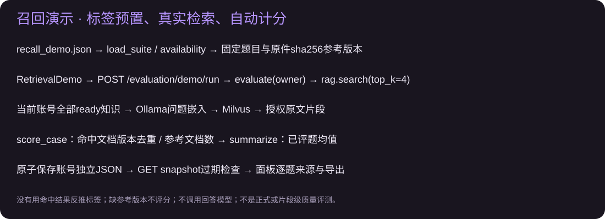

2026-11-17；工作目录/Users/zz/Desktop/A4G；单机课程演示模块。

| 路径 | 类/函数 | 职责 |
|---|---|---|
| data/evaluation/recall_demo.json | retrieval-demo.v1 | 固定8题及预置参考原件hash；未经专家审核。 |
| src/backend/app/evaluation.py | load_suite / corpus / availability | 校验题集；仅当前用户ready资料；按原件hash判断参考版本可用。 |
| src/backend/app/evaluation.py | score_case / summarize | 前4片段按文档版本去重；缺参考未评；计算已评题宏平均。 |
| src/backend/app/evaluation.py | evaluate / report_path | 账号互斥、调用原rag.search、运行前后语料哈希核对；完整结果0600原子保存。 |
| src/backend/app/evaluation.py | snapshot / build_evaluation_router | 认证GET/POST；返回当前用户题集可用性、上次结果、题集/知识变化过期标记。 |
| src/backend/app/rag.py；embeddings.py；repositories/milvus.py | search / embed_query / search_vectors | 沿用真实当前用户授权范围检索；参考文档不作为搜索过滤条件；top4/0.3阈值。 |
| src/frontend/src/components/RetrievalDemo.tsx | RetrievalDemo / run / download | 读取题集，运行计分，显示均值/覆盖/题目/来源；JSON导出；带入问答。 |
| src/frontend/src/main.tsx；components/retrieval-demo.css | App / knowledge页 / query view | 知识库页集成、账号key隔离、资料变化重读；紫色深浅主题，直达入口hash定位。 |
| tests/test_evaluation.py；scripts/live_recall_demo_acceptance.py | 10 tests / main | 替身边界测试与真实HTTP检索验收分开；独立重算、认证和账号隔离。 |
正式评估扩展：保留题集schema和逐题检索记录，另外审核标签、明确相关性穷尽/片段粒度、构建独立留出语料；不把当前Demo成绩直接改名成正式成绩。